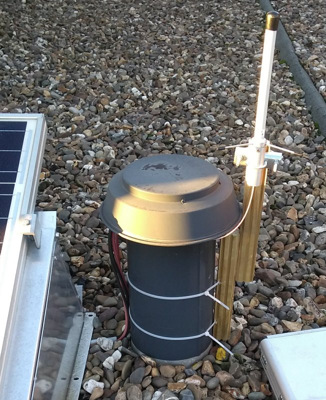

RPIB2
Dit is de rpib2.
Hardware : BCM2835
Revision : a01041
Serial : 000000007d31a8e9
http://rpib2.gejanssen.com/
http://rpib2:8080/

Pi 2 Model B (quad core)
1GB
a01041
Draaiende op: Raspbian GNU/Linux 8